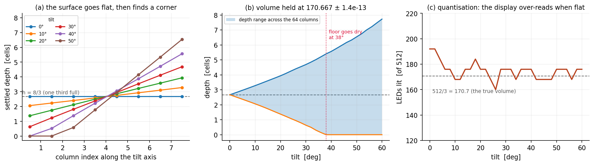

Embedded systems ◆ 512 LEDs ◆ MIE438 ◆ University of Toronto ◆ 2022
Console games have been stuck behind a flat pane of glass since Computer Space. So we soldered 512 LEDs into a cube, drove them with nine shift registers over one SPI bus, and rewrote Snake and Pong for three dimensions. The whole thing is an illusion: only one of the eight layers is ever lit, and it works because the cube refreshes faster than your eye can follow. Below you can drive it — twelve animations, a cube a third full of liquid you tip by dragging — and then take that refresh rate away.
The real thing: 512 5 mm LEDs on a 3D-printed base under an acrylic enclosure, driven from a breadboard because the PCB did not make it off the bench in time.
The cube below runs the way the hardware does: a frame buffer of 512 bits, and a multiplexer that lights one layer at a time in sequence. The glow is a persistence-of-vision model — an LED reads as lit for about 55 ms after it is driven. Pick a pattern, then drag the refresh rate down and watch the illusion come apart in front of you, which is exactly the constraint the whole electronics design is built around.
Drag the cube to turn it. In Liquid the drag is the tilt: gravity is resolved into the cube frame, so tipping the box pours the fluid downhill.
Take the refresh rate below about 40 Hz and the layers start to separate; below 10 Hz you can watch the multiplexer walk up the cube one plane at a time, which is all it has ever been doing.
The display is binary — an LED is on or off, there is no room in the refresh loop for brightness — so a liquid has to be drawn as a height field: for each of the 64 columns, how many of its eight cells are wet. That turns out to be exactly what the cheapest useful fluid model produces.
The solver is shallow water on the 8 × 8 floor: a height h per column, and velocities stored on the faces between columns rather than at the centres. Each step accelerates the faces down the surface gradient and along the tilt, then moves volume with an upwind flux:
Faces are the reason it behaves. Storing velocity at cell centres lets a column push and pull itself, and the surface develops a checkerboard that no amount of damping removes; on the staggered grid a face velocity only ever moves volume between the two columns it separates, so the scheme conserves mass by construction. The cube is filled to h = 8/3 ≈ 2.67 cells — a third of its height, 170.7 cell-volumes — and the total is renormalised every step to kill the drift that clamping h ≥ 0 at the walls would otherwise introduce.
Gravity comes from where you dragged the cube. The renderer's screen-up direction is rotated back into cube coordinates, giving g = (g·sinθ·sinψ, g·sinθ·cosψ, g·cosθ) for yaw ψ and pitch θ; the in-plane part drives the fluid downhill and the vertical part sets the wave speed √(gzh). Tip the cube far enough and gz weakens, the waves slow down, and the surface takes visibly longer to settle — which is correct, and not something you would get from animating a tilted plane.
Rendering is one line per column: light cells 0…⌊h⌋−1, then light the cell at ⌊h⌋ if the fractional part clears 0.45, so the surface reads as a surface rather than a staircase.
That last rule is where the display gets its say. A third of eight cells is 2.667, and a column can only be drawn 2 or 3 deep — so at rest, when every column has the same fraction, every column rounds the same way and the cube lights 192 of 512 LEDs, or 37.5 %, not 33.3 %. The solver holds 170.667 cell-volumes exactly; the display cannot show a two-thirds-full cell. Tip the cube and the columns stop agreeing, the rounding goes both ways, and it settles to about 176 — closer to the true volume when the surface is sloped than when it is flat, which is the opposite of what you would guess.
The obvious answer to "liquid in a cube" is SPH or a particle sim, and on a 512-voxel binary display it is the wrong one: a few thousand particles have to be binned into 64 columns to be drawn at all, so every bit of detail the particles buy is thrown away in the last step. The height field solves for the quantity the display can actually show, at about 150 arithmetic operations per column per substep — cheap enough to run four substeps a frame and stay well inside the animation budget.
What it gives up is real: a height field cannot break a wave, cannot separate a droplet, and cannot hold liquid on the ceiling, so tipping past vertical is not modelled. On this display none of those are visible.

Liquid class this page runs — the harness is scripts/tools/ledcube_liquid.py, which calls into assets/js/ledcube.js through node, so the numbers cannot drift from the code.
(a) Every settled profile is a straight line, and they all pivot about the centroid — which is the correctness test, because a fluid at rest must put its surface normal to gravity. Fitting the slope across the wet columns and comparing it to tan θ gives a maximum error of 0.0084 cells per column over 30 tilts; the solver is not approximately level, it is level.
(b) Volume is 170.666667 at every one of the 31 tilts, with a total spread of 6.5 × 10⁻¹³ — the staggered grid conserves mass by construction, and the renormalisation only has to undo the clamping at dry walls. Past 38° the uphill floor goes dry and the liquid is pooled in a corner.
(c) The interesting failure. The display cannot show a 2.667-deep column, so upright — when all 64 columns round the same way — it lights 192 LEDs for a volume of 170.7, over-reading by 12 %. Tilt it and the columns disagree, the rounding goes both ways, and the count oscillates within ±4 % of the truth. The picture is more honest when the liquid is sloshing than when it is still.512 LEDs, and a microcontroller with a few dozen pins. The naive wiring — one output per LED — needs 512 lines, or 64 shift registers plus one to select. The design that ships needs nine, and the difference is entirely multiplexing.
The cube is wired as eight horizontal layers. Within a layer, the 64 anodes are addressed by eight daisy-chained shift registers — one byte each, 64 bits in total, clocked out over SPI and released together on a latch. A ninth register drives the eight cathode layers through MOSFETs, grounding exactly one at a time.
So at any instant the hardware can light an arbitrary pattern on one layer, and nothing else. The full cube is produced by walking the layer select in a loop:
and if 8·Δt is short enough, the eye integrates the eight layers into one solid image. That is the whole trick, and it is why the refresh rate is not a nice-to-have — it is the thing holding the display together. Get it wrong and you do not get a dimmer cube, you get a visibly flickering stack of planes.
It also bounds the design. The duty cycle per LED is 1/8, so each one is off 87.5 % of the time and has to be driven correspondingly harder to look the same brightness — which is why the build moved from 3 mm to 5 mm LEDs, for the current and voltage headroom, and why the MOSFETs replaced BJTs on the cathode side. And it caps what the display can do: the cube has no room left in the loop for per-LED brightness, so everything is on or off.
Two changes late in the build are worth recording because both were about the same constraint. Anodes and cathodes were originally driven separately from the microcontroller; daisy-chaining every register onto one chain removed a pile of wiring and a pile of pins. And the register link moved from bit-banged serial to SPI, purely for the clock rate — the refresh budget is the whole game.
Shown in intent rather than verbatim — the shipped version runs off a TimerOne interrupt so the games are not blocked by the display.
| Built | Changed, and why |
|---|---|
| 3 mm LEDs | → 5 mm, for current and voltage headroom |
| BJT cathode switches | → MOSFETs, lower drop at 64-LED current |
| Separate anode/cathode drive | → one daisy chain, far less wiring |
| Bit-banged serial | → SPI, for the refresh budget |
| Custom PCB | designed, not populated — the prototype stayed on breadboard |
The Arduino Mega ran the cube, but the report is clear that it was at its limit: one SPI bus, one I²C bus, and a library stack — Adafruit SSD1306, SPI, Wire, TimerOne, PS2X — competing for the same interrupts as the refresh loop. Any upgrade to RGB LEDs triples the data per frame and there is no second SPI bus to put it on.
The named successor is the ESP32: 160–240 MHz against 16, 520 KB of RAM, four SPI buses and two I²C controllers, plus WiFi and Bluetooth for a controller that is not tethered. The interesting part is that the bottleneck was never compute — it was I/O lines and interrupt budget, which is the usual shape of an embedded ceiling and not the one people design against first.
Snake in two dimensions has four inputs. In a cube it has six, and that changes the game rather than decorating it: the body occludes itself from every viewing angle, so a player has to hold a mental model of a volume rather than read a plane. The build drives it from a PS2 controller, with the two shoulder buttons taking the z-axis.
Pong went in as well, and a 3-D paddle is much harder to aim than it sounds — for exactly the occlusion reason. Both are on their own page, with a machine opponent to play Pong against.
Walls wrap, so running off one face brings you back on the other. Scores persist in your browser.
MIE438: Microprocessors and Embedded Microcontrollers at the University of Toronto, joint work with Jiaming (Jason) Dong. The cube, the PCB design, the display library and both games are from the course project.
The browser cube on this page — the frame buffer, the multiplexer, the persistence-of-vision model and 3-D Snake — was written afterwards, to make the constraint the electronics are built around something you can see rather than read about.